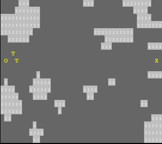
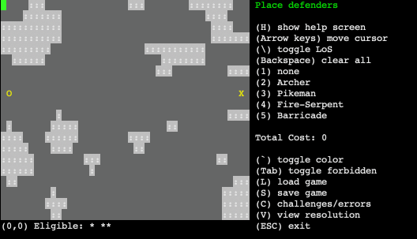
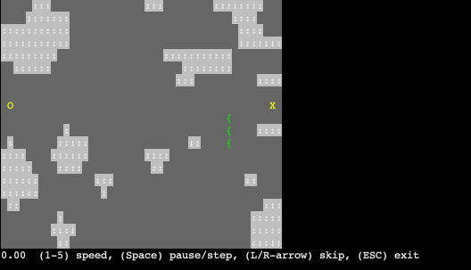

BattlePlan Gameplay Instructions
Planning
In BattlePlan, enemy attackers are trying to march from their spawn points O to
their goals X.

Your goal is to place defenders to stop them. (Use the arrow keys to move the cursor.)

Once you have finished planning your defense, press the V key to play out the battle and view the results.

You win if no attackers breach your defenses. If you use few enough resources and don't place any in
prohibited areas, you can beat scenario-specific challenges.

Terrain
The map is made up of four different kinds of terrain:
- Open - Units can move, see, and attack through open terrain.
- : Stone - Blocks movement, vision, and attacks.
- ~ Water - Blocks movement but not vision or attacks.
- @ Open - Blocks vision but not movement or attacks.
Attackers
The enemy has several types of attackers at its disposal:
- f Zombies are fearless. They will try to take the most direct path toward a goal,
regardless of the danger. They will attack defenders blocking their path.
- T Grunts will go a little out of their way to avoid strongly-defended areas.
They will attack defenders blocking their path.
- i Scouts look for the least-defended path to a goal, even if it means going
far out of their way.
- Y Berserkers will charge toward and attack any enemies they see. They will only
move toward a goal if they can't find any more defenders to fight.
- ] Crossbowmen shoot any defenders they see from long range while marching toward
a goal.
- A Storm-Mages strike many defenders at once from a distance using chain lightning.
Defenders
You have four types of defenders you can place to help fight back the enemy. Defenders don't move.
- { Archers attack at considerable range.
- ^ Pikemen have a strong attack with a two-tile range.
- S Fire-Serpents shoot jets of fire that damage anyone who is caught in them.
- # Barricades don't do anything except block movement until they are destroyed.